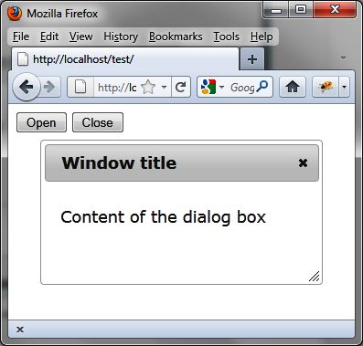
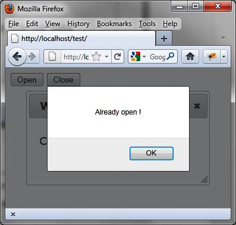
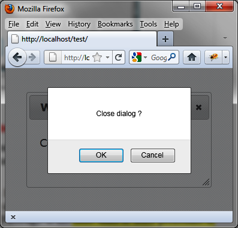
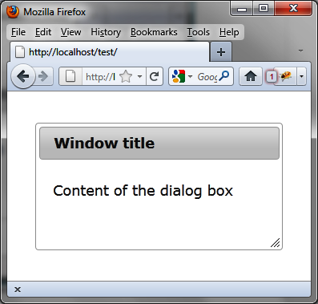
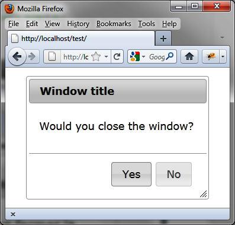
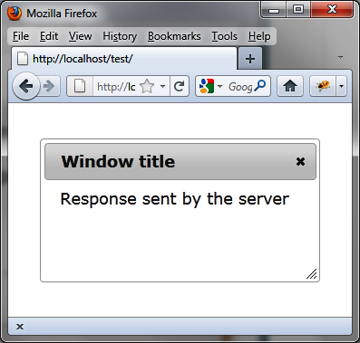
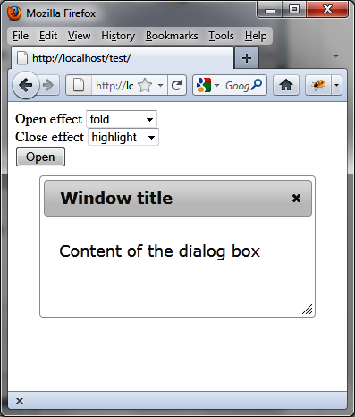

{% include JB/setup %}
{% raw %}
<div>
<div class="book" title="Examples of Using Dialog Boxes"><div class="book"><div class="book"><div class="book"><h1 class="title2"><a id="examples_of_using_dialog_boxes" class="calibre1"></a>Examples of Using Dialog Boxes</h1></div></div></div><p class="calibre7">Let’s put some dialog boxes in our script and manage them using the
    information in this chapter.</p><div class="book" title="Opening and Closing a Dialog Box"><div class="book"><div class="book"><div class="book"><h2 class="title5"><a id="opening_and_closing_a_dialog_box" class="calibre1"></a>Opening and Closing a Dialog Box</h2></div></div></div><p class="calibre7">Here, we’ll use the <code class="literal">dialog
      ("open")</code> and <code class="literal">dialog
      ("close")</code> methods (shown in bold) to add two <code class="literal">Open</code> and <code class="literal">Close</code> buttons to the page for opening and
      closing the dialog box:</p><a id="I_programlisting4_d1e3550" class="firstname"></a><pre class="programlisting">&lt;!DOCTYPE html&gt;
&lt;script src = jquery.js&gt;&lt;/script&gt;
&lt;script src = jqueryui/js/jquery-ui-1.8.16.custom.min.js&gt;&lt;/script&gt;

&lt;link rel=stylesheet type=text/css
      href=jqueryui/css/smoothness/jquery-ui-1.8.16.custom.css /&gt;

&lt;div id="dialog" title="Window title"&gt;
  &lt;p&gt; Content of the dialog box&lt;/p&gt;
&lt;/div&gt;

&lt;input id=open type=button value=Open&gt;
&lt;input id=close type=button value=Close&gt;

&lt;script&gt;

$("div#dialog").dialog ({
  autoOpen : false
});

<span class="firstname"><strong class="userinput">$("#open").click (function (event)    // Open button Treatment</strong></span>
<span class="firstname"><strong class="userinput">{</strong></span>
  <span class="firstname"><strong class="userinput">if ($("#dialog").dialog ("isOpen")) alert ("Already open !");</strong></span>
  <span class="firstname"><strong class="userinput">else $("#dialog").dialog ("open");</strong></span>
<span class="firstname"><strong class="userinput">});</strong></span>

<span class="firstname"><strong class="userinput">$("#close").click (function (event)   // Close button Treatment</strong></span>
<span class="firstname"><strong class="userinput">{</strong></span>
  <span class="firstname"><strong class="userinput">if (!$("#dialog").dialog ("isOpen")) alert ("Already closed !");</strong></span>
  <span class="firstname"><strong class="userinput">else $("#dialog").dialog ("close");</strong></span>
<span class="firstname"><strong class="userinput">});</strong></span>

&lt;/script&gt;</pre><p class="calibre7">Initially, the dialog box is created but is not open (<code class="literal">options.autoOpen</code> set to <code class="literal">false</code>). Before opening the dialog box, we test
      whether it is already open with <code class="literal">dialog
      ("isOpen")</code>. We do the same for closing it.</p><p class="calibre7"><a class="ulink" href="ch04s05.html#buttons_to_open_and_close_the_dialog_box" title="Figure 4-5. Buttons to open and close the dialog box">Figure 4-5</a> shows
      the window after it is opened.</p><div class="book"><div class="figure"><a id="buttons_to_open_and_close_the_dialog_box" class="firstname"></a><div class="book"><div class="book"><a id="I_mediaobject4_d1e3600" class="firstname"></a></div></div><p class="title4">Figure 4-5. Buttons to open and close the dialog box</p></div></div><p class="calibre7">If you try to open the dialog box a second time, you will receive
      an alert message that says, “Already open!” (<a class="ulink" href="ch04s05.html#an_alert_message_appears_when_you_try_to" title="Figure 4-6. An alert message appears when you try to open a dialog box that is already open">Figure 4-6</a>).</p><div class="book"><div class="figure"><a id="an_alert_message_appears_when_you_try_to" class="firstname"></a><div class="book"><div class="book"><a id="I_mediaobject4_d1e3612" class="firstname"></a></div></div><p class="title4">Figure 4-6. An alert message appears when you try to open a dialog box that
        is already open</p></div></div></div><div class="book" title="Applying an Effect When Opening or Closing the Dialog Box"><div class="book"><div class="book"><div class="book"><h2 class="title5"><a id="applying_an_effect_when_opening_or_closi" class="calibre1"></a>Applying an Effect When Opening or Closing the Dialog Box</h2></div></div></div><p class="calibre7">By default, no effect is used when opening or closing a dialog
      box. We can apply an effect using the <code class="literal">show</code> and <code class="literal">hide</code> options (shown in bold). In this example,
      the dialog box will appear by sliding from the left side of the page
      (<code class="literal">slide</code> effect) and will disappear by
      enlarging and reducing its opacity (<code class="literal">puff</code> effect):</p><a id="I_programlisting4_d1e3634" class="firstname"></a><pre class="programlisting">&lt;!DOCTYPE html&gt;
&lt;script src = jquery.js&gt;&lt;/script&gt;
&lt;script src = jqueryui/js/jquery-ui-1.8.16.custom.min.js&gt;&lt;/script&gt;

&lt;link rel=stylesheet type=text/css
      href=jqueryui/css/smoothness/jquery-ui-1.8.16.custom.css /&gt;

&lt;div id="dialog" title="Window title"&gt;
  &lt;p&gt; Content of the dialog box&lt;/p&gt;
&lt;/div&gt;

&lt;script&gt;

<span class="firstname"><strong class="userinput">$("div#dialog").dialog ({</strong></span>
  <span class="firstname"><strong class="userinput">show : "slide",</strong></span>
  <span class="firstname"><strong class="userinput">hide : "puff"</strong></span>
<span class="firstname"><strong class="userinput">});</strong></span>

&lt;/script&gt;</pre></div><div class="book" title="Verifying the Closure of the Dialog Box"><div class="book"><div class="book"><div class="book"><h2 class="title5"><a id="verifying_the_closure_of_the_dialog_box" class="calibre1"></a>Verifying the Closure of the Dialog Box</h2></div></div></div><p class="calibre7">It is possible to verify the closure of a dialog box with the
      <code class="literal">options.beforeclose</code> option. This
      option corresponds to a method that is activated when the dialog box
      closes. If the method returns <code class="literal">false</code>,
      the dialog box does not close.</p><p class="calibre7">In this example, a confirmation message appears when the user
      tries to close the dialog box (<a class="ulink" href="ch04s05.html#the_confirmation_dialog_box_verifies_clo" title="Figure 4-7. The confirmation dialog box verifies closure of the main dialog box">Figure 4-7</a>). The dialog box
      will be closed when the user clicks the OK button:</p><a id="I_programlisting4_d1e3663" class="firstname"></a><pre class="programlisting">&lt;!DOCTYPE html&gt;
&lt;script src = jquery.js&gt;&lt;/script&gt;
&lt;script src = jqueryui/js/jquery-ui-1.8.16.custom.min.js&gt;&lt;/script&gt;

&lt;link rel=stylesheet type=text/css
      href=jqueryui/css/smoothness/jquery-ui-1.8.16.custom.css /&gt;

&lt;div id="dialog" title="Window title"&gt;
  &lt;p&gt; Content of the dialog box&lt;/p&gt;
&lt;/div&gt;

&lt;script&gt;

$("div#dialog").dialog ({
  <span class="firstname"><strong class="userinput">beforeclose : function (event)</strong></span>
  <span class="firstname"><strong class="userinput">{</strong></span>
    <span class="firstname"><strong class="userinput">if (!confirm ("Close dialog ?")) return false;</strong></span>
  <span class="firstname"><strong class="userinput">}</strong></span>
});

&lt;/script&gt;</pre><div class="book"><div class="figure"><a id="the_confirmation_dialog_box_verifies_clo" class="firstname"></a><div class="book"><div class="book"><a id="I_mediaobject4_d1e3680" class="firstname"></a></div></div><p class="title4">Figure 4-7. The confirmation dialog box verifies closure of the main dialog
        box</p></div></div><p class="calibre7">Another way to prevent the closure of the dialog box is to remove
      the close button. This case is treated in the next section.</p></div><div class="book" title="Hiding the Close Button"><div class="book"><div class="book"><div class="book"><h2 class="title5"><a id="hiding_the_close_button" class="calibre1"></a>Hiding the Close Button</h2></div></div></div><p class="calibre7">We can prevent the closure of the dialog box by removing (hiding)
      the close button.</p><p class="calibre7">The close button is associated with an <code class="literal">&lt;a&gt;</code> link with the <code class="literal">ui-dialog-titlebar-close</code> CSS class. This link
      can be easily identified in the HTML generated by the call for <code class="literal">dialog (options)</code> (e.g., with Firebug). It is
      located in the sibling element before the contents of the dialog box
      (shown in bold):</p><a id="I_programlisting4_d1e3703" class="firstname"></a><pre class="programlisting">&lt;!DOCTYPE html&gt;
&lt;script src = jquery.js&gt;&lt;/script&gt;
&lt;script src = jqueryui/js/jquery-ui-1.8.16.custom.min.js&gt;&lt;/script&gt;

&lt;link rel=stylesheet type=text/css
      href=jqueryui/css/smoothness/jquery-ui-1.8.16.custom.css /&gt;

&lt;div id="dialog" title="Window title"&gt;
  &lt;p&gt; Content of the dialog box&lt;/p&gt;
&lt;/div&gt;

&lt;script&gt;

<span class="firstname"><strong class="userinput">$("div#dialog").dialog ().prev ().find (".ui-dialog-titlebar-close").hide ();</strong></span>

&lt;/script&gt;</pre><p class="calibre7">This statement includes the following:</p><div class="book"><ol class="orderedlist"><li class="listitem"><p class="calibre7">We call <code class="literal">dialog ()</code> to
          convert the HTML dialog box.</p></li><li class="listitem"><p class="calibre7">We get the previous sibling of content with <code class="literal">prev ()</code>.</p></li><li class="listitem"><p class="calibre7">In this relationship, we look for the element with the
          <code class="literal">ui-dialog-titlebar-close</code> CSS
          class.</p></li><li class="listitem"><p class="calibre7">We hide this element using <code class="literal">hide
          ()</code>.</p></li></ol></div><p class="calibre7">This must be done in the listed order. If, for example, we do not
      call <code class="literal">dialog ()</code> first, the <code class="literal">prev ()</code> instruction will not find the link in
      the previous element, because the HTML has not been turned into a dialog
      box!</p><p class="calibre7">As shown in <a class="ulink" href="ch04s05.html#dialog_box_without_a_close_button" title="Figure 4-8. Dialog box without a close button">Figure 4-8</a>,
      the close button is not visible.</p><div class="book"><div class="figure"><a id="dialog_box_without_a_close_button" class="firstname"></a><div class="book"><div class="book"><a id="I_mediaobject4_d1e3750" class="firstname"></a></div></div><p class="title4">Figure 4-8. Dialog box without a close button</p></div></div></div><div class="book" title="Inserting Buttons in the Dialog Box"><div class="book"><div class="book"><div class="book"><h2 class="title5"><a id="inserting_buttons_in_the_dialog_box" class="calibre1"></a>Inserting Buttons in the Dialog Box</h2></div></div></div><p class="calibre7">We now want to insert buttons in the dialog box, such as Yes and
      No buttons in a window asking, “Would you like to close the window?”
      (see <a class="ulink" href="ch04s05.html#the_yes_and_no_buttons_now_appear_in_the" title="Figure 4-9. The Yes and No buttons now appear in the dialog box">Figure 4-9</a>). We
      can use <code class="literal">options.buttons</code> (shown in
      bold) for this.</p><p class="calibre7">Users can close the window only by clicking the Yes button—the
      standard close button has been removed:</p><a id="I_programlisting4_d1e3767" class="firstname"></a><pre class="programlisting">&lt;!DOCTYPE html&gt;
&lt;script src = jquery.js&gt;&lt;/script&gt;
&lt;script src = jqueryui/js/jquery-ui-1.8.16.custom.min.js&gt;&lt;/script&gt;

&lt;link rel=stylesheet type=text/css
      href=jqueryui/css/smoothness/jquery-ui-1.8.16.custom.css /&gt;

&lt;div id="dialog" title="Window title"&gt;
  &lt;p&gt; Would you like to close the dialog box?&lt;/p&gt;
&lt;/div&gt;

&lt;script&gt;

<span class="firstname"><strong class="userinput">$("div#dialog").dialog ({</strong></span>
  <span class="firstname"><strong class="userinput">buttons : {</strong></span>
    <span class="firstname"><strong class="userinput">"Yes" : function ()</strong></span>
    <span class="firstname"><strong class="userinput">{</strong></span>
      <span class="firstname"><strong class="userinput">$("div#dialog").dialog ("close");</strong></span>
    <span class="firstname"><strong class="userinput">},</strong></span>
    <span class="firstname"><strong class="userinput">"No" : function ()</strong></span>
    <span class="firstname"><strong class="userinput">{</strong></span>
    <span class="firstname"><strong class="userinput">}</strong></span>
  <span class="firstname"><strong class="userinput">}</strong></span>
<span class="firstname"><strong class="userinput">}).prev().find(".ui-dialog-titlebar-close").hide ();</strong></span>

&lt;/script&gt;</pre><div class="book"><div class="figure"><a id="the_yes_and_no_buttons_now_appear_in_the" class="firstname"></a><div class="book"><div class="book"><a id="I_mediaobject4_d1e3806" class="firstname"></a></div></div><p class="title4">Figure 4-9. The Yes and No buttons now appear in the dialog box</p></div></div></div><div class="book" title="Inserting Content Using Ajax"><div class="book"><div class="book"><div class="book"><h2 class="title5"><a id="inserting_content_using_ajax" class="calibre1"></a>Inserting Content Using Ajax</h2></div></div></div><p class="calibre7">Now let’s insert content retrieved dynamically from the server
      into the dialog box before opening. This is done using the <code class="literal">options.open</code> option (shown in bold). This
      method is called before the dialog box is displayed:</p><a id="I_programlisting4_d1e3819" class="firstname"></a><pre class="programlisting">&lt;!DOCTYPE html&gt;
&lt;script src = jquery.js&gt;&lt;/script&gt;
&lt;script src = jqueryui/js/jquery-ui-1.8.16.custom.min.js&gt;&lt;/script&gt;

&lt;link rel=stylesheet type=text/css
      href=jqueryui/css/smoothness/jquery-ui-1.8.16.custom.css /&gt;

&lt;div id="dialog" title="Window title"&gt;
  &lt;p&gt; Content of the dialog box&lt;/p&gt;
&lt;/div&gt;

&lt;script&gt;

<span class="firstname"><strong class="userinput">$("div#dialog").dialog ({</strong></span>
  <span class="firstname"><strong class="userinput">open : function (event)</strong></span>
  <span class="firstname"><strong class="userinput">{</strong></span>
    <span class="firstname"><strong class="userinput">$(this).load ("action.php");</strong></span>
  <span class="firstname"><strong class="userinput">}</strong></span>
<span class="firstname"><strong class="userinput">});</strong></span>

&lt;/script&gt;</pre><p class="calibre7">Recall that in the event methods (defined here by <code class="literal">options.open</code>), the <code class="literal">this</code> value represents the HTML element
      corresponding to the contents of the dialog box. <code class="literal">$(this)</code> is a jQuery class object associated
      with this element of the DOM. The <em class="calibre4">action.php</em> file is as follows:</p><a id="I_programlisting4_d1e3854" class="firstname"></a><pre class="programlisting">&lt;?
  $txt = "&lt;span&gt; Response sent by the server &lt;/span&gt;";
  $txt = utf8_encode($txt);
  echo ($txt);
?&gt;</pre><p class="calibre7">The URL of the page displayed in the browser must begin with
      http://, otherwise the Ajax call cannot be performed.</p><p class="calibre7">The content of the dialog box is retrieved by Ajax and the window
      is displayed with its new content (<a class="ulink" href="ch04s05.html#dialog_box_initialized_dynamically" title="Figure 4-10. Dialog box initialized dynamically">Figure 4-10</a>).</p><div class="book"><div class="figure"><a id="dialog_box_initialized_dynamically" class="firstname"></a><div class="book"><div class="book"><a id="I_mediaobject4_d1e3865" class="firstname"></a></div></div><p class="title4">Figure 4-10. Dialog box initialized dynamically</p></div></div></div><div class="book" title="Changing the Behavior of a Dialog Box with Effects"><div class="book"><div class="book"><div class="book"><h2 class="title5"><a id="changing_the_behavior_of_a_dialog_box_wi" class="calibre1"></a>Changing the Behavior of a Dialog Box with Effects</h2></div></div></div><p class="calibre7">We have seen that the options used when creating the dialog box
      can be modified by the <code class="literal">dialog ("option", param,
      value)</code> method. The <code class="literal">param</code>
      parameter is the name of the option, while the <code class="literal">value</code> corresponds to its new value.</p><p class="calibre7">To illustrate this, let’s change the effect for the opening and
      closing of the window. We’ll display two lists for which we can select
      the desired effect (<code class="literal">"puff"</code>, <code class="literal">"slide"</code>, etc.). When creating the dialog box,
      no effect is associated with it:</p><a id="I_programlisting4_d1e3892" class="firstname"></a><pre class="programlisting">&lt;!DOCTYPE html&gt;
&lt;script src = jquery.js&gt;&lt;/script&gt;
&lt;script src = jqueryui/js/jquery-ui-1.8.16.custom.min.js&gt;&lt;/script&gt;

&lt;link rel=stylesheet type=text/css
      href=jqueryui/css/smoothness/jquery-ui-1.8.16.custom.css /&gt;

&lt;div id="dialog" title="Window title"&gt;
  &lt;p&gt; Content of the dialog box&lt;/p&gt;
&lt;/div&gt;

Open effect
&lt;select id=effectopen&gt;
  &lt;option&gt;No effect&lt;/option&gt;
  &lt;option&gt;blind&lt;/option&gt;
  &lt;option&gt;bounce&lt;/option&gt;
  &lt;option&gt;clip&lt;/option&gt;
  &lt;option&gt;drop&lt;/option&gt;
  &lt;option&gt;fold&lt;/option&gt;
  &lt;option&gt;highlight&lt;/option&gt;
  &lt;option&gt;puff&lt;/option&gt;
  &lt;option&gt;pulsate&lt;/option&gt;
  &lt;option&gt;scale&lt;/option&gt;
  &lt;option&gt;slide&lt;/option&gt;
&lt;/select&gt;

&lt;br /&gt;

Close effect
&lt;select id=effectclose&gt;
  &lt;option&gt;No effect&lt;/option&gt;
  &lt;option&gt;blind&lt;/option&gt;
  &lt;option&gt;bounce&lt;/option&gt;
  &lt;option&gt;clip&lt;/option&gt;
  &lt;option&gt;drop&lt;/option&gt;
  &lt;option&gt;fold&lt;/option&gt;
  &lt;option&gt;highlight&lt;/option&gt;
  &lt;option&gt;puff&lt;/option&gt;
  &lt;option&gt;pulsate&lt;/option&gt;
  &lt;option&gt;scale&lt;/option&gt;
  &lt;option&gt;slide&lt;/option&gt;
&lt;/select&gt;

&lt;br /&gt;

&lt;input id=open type=button value=Open&gt;

&lt;script&gt;

$("div#dialog").dialog ({
  autoOpen : false
});

$("#effectopen").change (function (event)
{
  var effect = $(this).val ();
  if (effect == "No effect") effect = false;
  <span class="firstname"><strong class="userinput">$("div#dialog").dialog ("option", "show", effect);</strong></span>
});

$("#effectclose").change (function (event)
{
  var effect = $(this).val ();
  if (effect == "No effect") effect = false;
  <span class="firstname"><strong class="userinput">$("div#dialog").dialog ("option", "hide", effect);</strong></span>
});

$("#open").click (function (event)
{
  $("#dialog").dialog ("open");
});

&lt;/script&gt;</pre><p class="calibre7"><a class="ulink" href="ch04s05.html#application_of_an_effect_at_the_opening" title="Figure 4-11. Application of an effect at the opening and closing of the dialog box">Figure 4-11</a> shows
      the result with the fold and highlight effects selected.</p><div class="book"><div class="figure"><a id="application_of_an_effect_at_the_opening" class="firstname"></a><div class="book"><div class="book"><a id="I_mediaobject4_d1e3906" class="firstname"></a></div></div><p class="title4">Figure 4-11. Application of an effect at the opening and closing of the
        dialog box</p></div></div></div></div></div>

{% endraw %}

